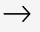
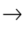

AUDIOVISUEL , SERIE
Richie Culver contemple
Dieu et Elvis dans Créer un
mode de vie autour de vos
problèmes

MELANGE , SERIE
Fact Mix 881 : Voix de DJ
La nouvelle installation immersive de Richard Mosse vous transporte au cœur de la zone rouge écologique de l'Amazonie
AUDIOVISUEL , SERIE
Richie Culver contemple
Dieu et Elvis dans Créer un
mode de vie autour de vos
problèmes
MELANGE , SERIE
Fact Mix 881 : Voix de DJ

REVUE
Fact lance un nouveau
numéro avec VTSS, Rabit,
Universal Everything et
Richard Mosse

DOCUMENTAIRES , SERIE
Bendik Giske explore les
idées de temps queer et
d'extase dans Not Yet
Universal Everything explore la vie numérique en mouvement avec Lifeforms, une nouvelle exposition solo majeure au 180 Studios
Commissions
VOIR PLUS
Caterina Barbieri, Ruben Spini et lacopo Carapelli ont illuminé le visuel 'Broken Melody'
Theo Tritafyllidis & Slugabed présentent : Nature morte avec ornithorynque
LUX : strict - Starry Beach
Fact 2021 : Commissions et performances en direct
LUX : Julianknxx - Corporel noir (respirer)
Des Expositions
Expositions factuelles au 180 The Strand et en ligne
VOIR PLUS
Le VTSS et les objets réels brouillent le numérique et le physique dans "Notoriously Fast"
Caterina Barbieri, Ruben Spini et lacopo Carapelli ont illuminé le visuel 'Broken Melody'
Theo Tritafyllidis & Slugabed présentent : Nature morte avec ornithorynque
LUX : strict - Starry Beach

Fact 2021 : Commissions et performances en direct
LUX : Julianknxx - Corporel noir (respirer)
Série
AV, notes de mise à jour, mixes, documentaires et plus encore.
VOIR PLUS
Fact lance un nouveau numéro avec VTSS, Rabit, Universal
Everything et Richard Mosse